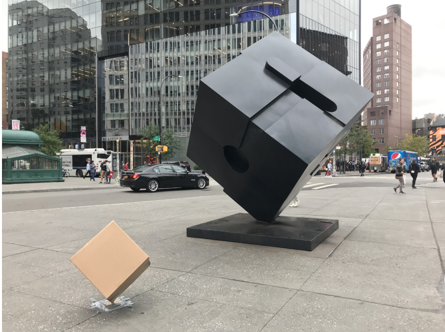
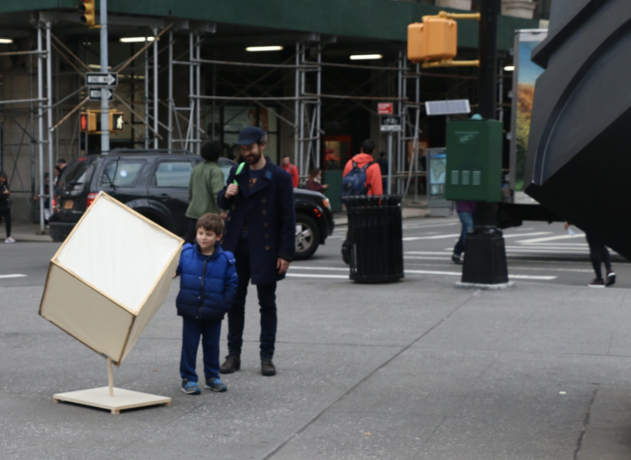

QB
QB (read: cube), a conversational miniature of the Alamo, evokes positive emotions through verbal and physical interaction with commuters and visitors in Astor Place.
QB is a miniature animate replica of the famous Astor Place cube, the Alamo. Barely four feet tall, QB is dwarfed in the presence of the nearly 1-ton monolithic sculpture. After observing we chose to place QB adjacent to its predecessor, in the popular transit hub, in order to disrupt the monotony of the daily commute. Instead of doing so in an unpleasant way, our chatty anthropomorphic cube (communicating through the use of a Bluetooth Speaker) was designed to engage strangers in casual conversation, bringing smiles to the faces of passers-by.
Below you will find video documentation and our location study for Astor Place.
Created in collaboration with Andy Sun, Ola Jankowska, and Lillian Crandall.
QB: Iteration 2
Astor Place
10.21.18 / 10.22.18
Materials:
Wooden frame, muslin cover, wooden dowl, wooden platform, Bluetooth speaker
QB: Iteration 1
Astor Place
10.16.18
Materials:
Cardboard box, wooden dowl, wooden platform, Bluetooth speaker

